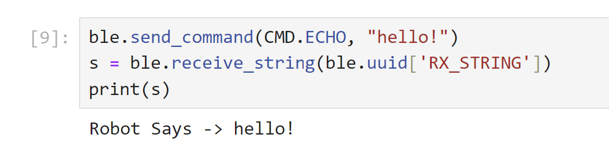
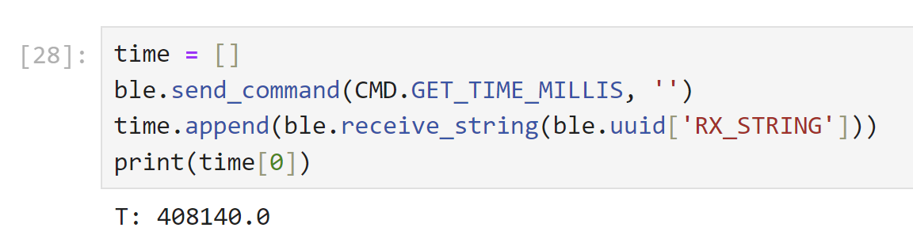
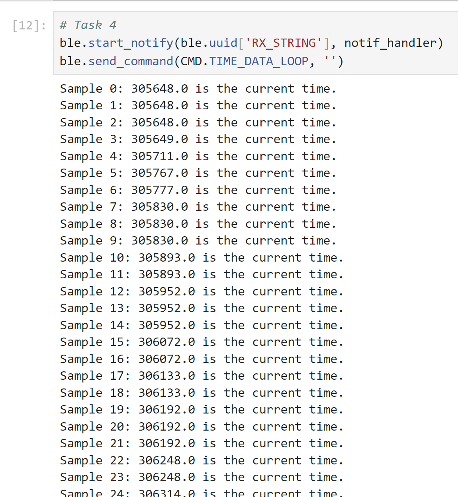

Lab 2 Bluetooth
The purpose of this lab was to setup bluetooth communication in order to communicate with the Artemis wirelessly in the future. This is especially important for debugging. In this lab, Jupyter Lab and Arduino were used in tandem to establish a bluetooth connection.
Prelab
To start the lab, I needed to create a virtual environment. As I already had the latest version of python, I just had to install pip and create my virtual environment from there. Then, I installed the codebase which would allow me to use ArduinoBLE. BLE, or "Bluetooth Low Energy" is a version of Bluetooth optimized for situations that don't require large sets of data transfer. The file ble_arduino.ino was the main file being used in this lab on the Artemis side. On the computer side, Jupyter Notebooks was used. For the virtual environment setup, I used the following code:
python3 -m pip install --user virtualenv
python3 -m venv FastRobots_ble
From there, I created a folder in my computer where all my Fast Robots code, and the fast robots environment would be kept, and then activated it.
After this, I opened Juputer Lab.
> .\FastRobots_ble\Scripts\activate
> jupyter lab
Configuration
In order to establish a bluetooth connection, I needed to know my device's MAC address. I did this by having it print to the serial monitor. Alongside this, I generated a UUID, or Unique Universal Identifier for my specific board such that I wouldn't connect to another student's board by mistake. All the info was added to the connections.yaml file in the demo codebase.
artemis_address: 'c0:89:94:6d:0e:4b'
#ble_service: '9a48ecba-2e92-082f-c079-9e75aae428b1'
ble_service: 'bc858ca3-5aad-4049-8c76-20d773b07cd9'
characteristics:
TX_CMD_STRING: '9750f60b-9c9c-4158-b620-02ec9521cd99'
RX_FLOAT: '27616294-3063-4ecc-b60b-3470ddef2938'
RX_STRING: 'f235a225-6735-4d73-94cb-ee5dfce9ba83'
Initially, I had a lot of trouble connecting to bluetooth. However, it was as simple as adding an extra
character to my artemis_address. The serial monitor had printed c0:89:94:6d:e:6b. However, the python script needed 12 characters,
so I added a 0 to get an equivalent 12 character MAC address.
Tasks
Echo
It is important for the Artemis Board to be able to send and modify strings. In order to configure this, I created a function ECHO. On the Arduino side, this consisted of adding a prefix to the message to say "Robot says ->" followed by the original message.
char char_arr[MAX_MSG_SIZE];
// Extract the next value from the command string as a character array
success = robot_cmd.get_next_value(char_arr);
if (!success)
return;
tx_estring_value.clear();
tx_estring_value.append("Robot Says -> ");
tx_estring_value.append(char_arr);
tx_characteristic_string.writeValue(tx_estring_value.c_str());
break;
On the python side, the results:

Get_Time_Millis
Next, I used the onboard timer to track and send time stamps through the bluetooth connection. This would be done a variety of ways throughout the lab, however to start I just sent a single timestamp by creating a command GET_TIME_MILLIS.
On the Arduino side:
case GET_TIME_MILLIS:
tx_estring_value.clear();
tx_estring_value.append("T: ");
tx_estring_value.append((float) millis());
tx_characteristic_string.writeValue(tx_estring_value.c_str());
Serial.println("Sent time");
break;
On the python side:

Notification Handler
Next, I set up a notification handler in order to receive strings and extract necessary data from them. In its original form, the notification handler only consistent of the print line now contained within the else statement.
def notif_handler(uuid, notif):
s = ble.bytearray_to_string(notif)
#Contains Temp Readings
if("|" in s):
sep_notif = s.split(" | ")
print(sep_notif[0] + ": " + sep_notif[1] + " is the current time and " + sep_notif[2] + " is the current temp in Fahrenheit.")
#Does not contain temp readings
else:
print(s + " is the current time.")
In later parts of the lab, the notification handler is used to handle large sets of data at once by storing them in an array on the Arduino side and then handling that array in the python notif_handler function.
Live-Sending Time Data
Before implementing an array to send data, I first wrote a loop which connects timestamps over 5 seconds, and sends them back over bluetooth immediately. I added a sample number to each timestamp in order to track the rate at which messages were sent. In the end, 155 timestamps were sent by the Arduino in 5 seconds, implying a rate of about 31 messages/second
On the Arduino side:
case TIME_DATA_LOOP:
{
int count = 0;
unsigned long startT = millis();
while (millis() - startT < 5000) {
tx_estring_value.clear();
tx_estring_value.append("Sample ");
tx_estring_value.append(count);
tx_estring_value.append(": ");
tx_estring_value.append((float) millis());
tx_characteristic_string.writeValue(tx_estring_value.c_str());
count++;
}
Serial.println("Sent time many times");
break;
}
On the Python side: 